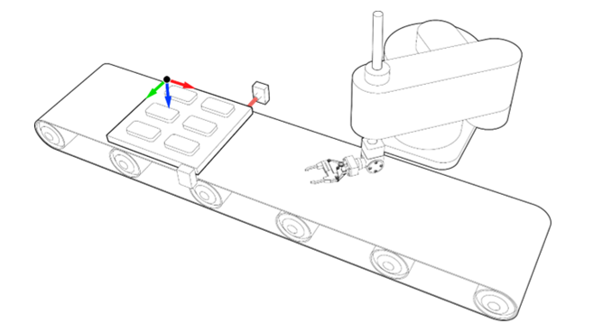

Robotics Command
value = ATTACH_OBJECT_FRAME(object frame)
Attach to a conveyor :
ATTACH_OBJECT_FRAME(control, object frame, syncVector, syncPos, syncAxis)
Attach to a multipurpose machine:
ATTACH_OBJECT_FRAME(control, object frame, axisX, axisY, axisZ, axisU, axisV, axisW, xOffset, yOffset, zOffset, uOffset, vOffset, wOffset)
Attach Object Frame is a method to link the vectors of an Object Frame with up to six axes and place it in a specific position. The object frame will then along with these axes.
There are two different modes to attach an object frame; one specifically designed to work with a conveyor and another one to work with a multipurpose machine.
An object frame must be created first before being attached or detached to axes.
OBJECT_FRAME requires the RPS runtime FEC .
|
Parameter |
Data type |
Description |
|
Value |
Boolean |
false / 0 = the specified object frame is not attached. true / non-zero value = the specified object frame is already attached. |
|
control |
Integer |
ATTACH_OBJECT_FRAME mode. 1 = Attach object frame with a conveyor mode 2 = Attach object frame with multipurpose machine mode 4 = Detach object frame |
|
object frame |
Integer / String |
Object Frame to attach. Value = index or name or the object frame. When used on its own, the command will return: TRUE = object frame specified is attached to a minimum of 1 axis FALSE = object frame specified is not attached to any axes |
|
syncVector |
Integer |
Object Frame vector that will be attached to syncAxis. Values: 1 = x 2 = y 3 = z |
|
syncPos |
Target |
Captured position on syncAxis. |
|
syncAxis |
Integer |
Axis to synchronise with. |
|
axisX, axisY, axisZ, axisU, axisV, axisW |
Integer |
Machine axis number that corresponds to the Object Frame vector that will be attached. Set -1 for non-attached vectors. |
|
xOffset, yOffset, zOffset, uOffset, vOffset, wOffset |
Integer |
Object Frame position and orientation relative to the origin of the Robot |
Check if object frame “of2” is attached to any axes.
ATTACH_OBJECT_FRAME( "of2" )
Attach object frame “pallet’ to axis 11.
ATTACH_OBJECT_FRAME ( 1 , "pallet" , 1 ,registed_position, 11 )
Attach object frame 3 with along Y vector of axis 11 of a multipurpose machine. The x and z position is offset by 400mm and Y orientation is offset by 90 degrees.
ATTACH_OBJECT_FRAME (2,3,-1,11,-1,-1,-1,-1,400,0,400,0,90,0)
As the conveyor can be in different orientations, the object frame can be set in multiple orientations to match the conveyor’s orientation. The selected object frame vector will follow the direction of the conveyor vector.
For example, pick and place operation. A common industry example is pick objects from a pallet and place them onto another station or in a package. The synchronisation could be simplified by using Attach Object Frame technique. An Object Frame will be placed on the pallet in a specific position. All the objects will be taught relative to the Object Frame “pallet”. The Object Frame “pallet” will be attached to the conveyor using one of the three possible options: vector X, vector Y or vector Z. Bear in mind that the conveyor could not be perfectly aligned with the robot, so orientation data of the Object Frame could be used to adjust it.
ATTACH_OBJECT_FRAME ( 1 , "pallet" , 1 ,registed_position, 11 )
After the command is executed, the Object Frame “pallet” will follow the conveyor precisely. At this state, the robot should be synchronised with the Object Frame “pallet”. Please, go to the next section to continue with the example.
 Example 5:
ATTACH_OBJECT_FRAME can also be used with a multi-purpose machine.
For example, machines with more than one axis. it is possible to attach the position and orientation vectors with up to 6 axes changing the control parameter. If, for instance, an object frame is attached to a 6 DOF robot arm, the position and orientation of the object frame will follow the robot TCP.
ATTACH_OBJECT_FRAME (2,3,-1,11,-1,-1,-1,-1,400,0,400,0,90,0)
Use control mode 4 to detach an object frame from axes.
ATTACH_OBJECT_FRAME ( 4 , "of2" )